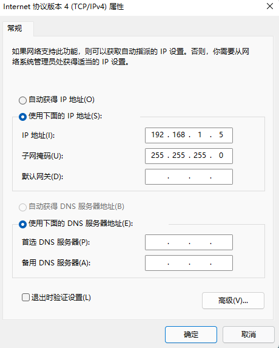

RAK7268固件烧录
环境搭建示意图
- 使用USB线连接WisGate和PC，
- 使用网线连接WisGate和PC。
电脑IP配置
- 设置IP地址为
192.168.1.5， - 设置子网掩码为
255.255.255.0。

Tftpd64配置
- 点击Browse，设置Current Directory为uboot和firmware所在的文件夹，
- 点击Server interface 下拉菜单，选择
192.168.1.5，即电脑设置的IP地址， - 点击Show Dir 可以确认当前路径是否有待烧录的固件。
串口设置
- 打开crt软件，Protocol选择
Serial - 设置波特率
57600 - Flow Control 全部不勾选

模式选择
1: Load system code to SDRAM via TFTP.
2: Load system code then write to Flash via TFTP.
3: Boot system code via Flash (default).
4: Entr boot command line interface.
7: Load Boot Loader code then write to Flash via Serial.
9: Load Boot Loader code then write to Flash via TFTP.
当前使用9和2烧录
9为通过tftp烧录boot loader
2为通过tftp烧录firmware
烧录uboot
- 选择
2通过tftp烧录firmware - 输入
Y - device IP 输入
192.168.1.2 - server IP 输入
192.168.1.5 - Uboot filename 输入
uboot.bin
烧录firmware
- 选择2 通过tftp烧录boot loader
- 输入
Y - device IP 输入
192.168.1.2 - server IP 输入
192.168.1.5 - Uboot filename 输入
WisGateOS_1.2.3.bin
写入电子标签
需要根据实际情况更改参数 ，比如文件路径, port 编号，bomid，oem_model，base_mac，eui
model RAK7249, RAK7258, RAK7268, RAK7289
1 | python hwdesc_writer.py "{\"csv\":\"D:\\project\\2020\\RAK7268\\new firmware\\RAK7268_PCBA_test_V5.14\\hwdesc-writer-v1.0.19\\samplecsv\\RAK7268.csv\",\"uart\":{\"port\":\"COM4\"},\"bomid\":\"918100D5\",\"oem_model\":\"RAK7268C\",\"dev\":{\"serial_number\":\"918100JM6010120703\",\"base_mac\":\"AC:1F:09:05:17:72\",\"mac_count\":\"2\",\"eui\":\"ac1f09fffe051772\"},\"manufacturer\":{\"date\":\"2021-12-12\"},\"vendor_name\":\"RAK\",\"sku\":\"\",\"clei_code\":\"\",\"build_info\":\"\",\"test_tracking_number\":\"SMT123\",\"e_label_ver\":\"1\"}" |
RAK7268配置如下，选择合适的BOM_ID写如电子标签。
| DEVICE_MODEL | DEVICE_OEM_MODEL | BOM_ID | BAND | LTE | LTE_number | LORA_number | GPS | BLE | Lora_type |
|---|---|---|---|---|---|---|---|---|---|
| RAK7268 | 918100D0 | 918100D0 | US915 | NA | 0 | 1 | 0 | 0 | RAK2247 |
| RAK7268 | 918100D1 | 918100D1 | EU868 | NA | 0 | 1 | 0 | 0 | RAK2247 |
| RAK7268C | 918100D4 | 918100D4 | US915 | EG95NA | 1 | 1 | 0 | 0 | RAK2247 |
| RAK7268C | 918100D5 | 918100D5 | EU868 | EG95E | 1 | 1 | 0 | 0 | RAK2247 |
| RAK7268 | 918100C9 | 918100C9 | US915 | NA | 0 | 1 | 0 | 0 | RAK2287 |
| RAK7268 | 918100CA | 918100CA | EU868 | NA | 0 | 1 | 0 | 0 | RAK2287 |
| RAK7268 | 918100CV | 918100CV | CN470 | NA | 0 | 1 | 0 | 0 | RAK2287 |
| RAK7268 | 918100CW | 918100CW | US915 | NA | 0 | 1 | 0 | 1 | RAK2287 |
| RAK7268 | 918100CX | 918100CX | EU868 | NA | 0 | 1 | 0 | 1 | RAK2287 |
| RAK7268 | 918100CY | 918100CY | CN470 | NA | 0 | 1 | 0 | 1 | RAK2287 |
| RAK7268C | 918100DF | 918100DF | US915 | EG95NA | 1 | 1 | 0 | 0 | RAK2287 |
| RAK7268C | 918100DG | 918100DG | EU868 | EG95E | 1 | 1 | 0 | 0 | RAK2287 |
| RAK7268C | 918100DH | 918100DH | US915 | EG95NA | 1 | 1 | 0 | 1 | RAK2287 |
| RAK7268C | 918100DJ | 918100DJ | EU868 | EG95E | 1 | 1 | 0 | 1 | RAK2287 |
| RAK7268 | 918100DK | 918100DK | US915 | NA | 0 | 1 | 0 | 0 | RAK2247 |
| RAK7268 | 918100DL | 918100DL | EU868 | NA | 0 | 1 | 0 | 0 | RAK2247 |
| RAK7268C | 918100DM | 918100DM | US915 | EG95NA | 1 | 1 | 0 | 0 | RAK2247 |
| RAK7268C | 918100DN | 918100DN | EU868 | EG95E | 1 | 1 | 0 | 0 | RAK2247 |
| RAK7268 | 918100DP | 918100DP | US915 | NA | 0 | 1 | 0 | 0 | RAK2287 |
| RAK7268 | 918100DQ | 918100DQ | UE868 | NA | 0 | 1 | 0 | 0 | RAK2287 |
| RAK7268C | 918100DR | 918100DR | US915 | EG95NA | 1 | 1 | 0 | 0 | RAK2287 |
| RAK7268C | 918100DS | 918100DS | EU868 | EG95E | 1 | 1 | 0 | 0 | RAK2287 |
| RAK7268 | 918100D2 | 918100D2 | CN470 | NA | 0 | 1 | 0 | 0 | RAK2247 |
| RAK7268 | 918100D3 | 918100D3 | EU433 | NA | 0 | 1 | 0 | 0 | RAK2247 |
| RAK7268C | 918100D6 | 918100D6 | CN470 | EG95E | 1 | 1 | 0 | 0 | RAK2247 |
| RAK7268C | 918100D7 | 918100D7 | EU433 | EG95E | 1 | 1 | 0 | 0 | RAK2247 |
| RAK7268C | 918100EF | 918100EF | CN470 | EG95E | 1 | 1 | 0 | 0 | RAK2287 |
| RAK7268C | 918100EG | 918100EG | EU433 | EG95E | 1 | 1 | 0 | 0 | RAK2287 |
注意：
1.需要安装python环境 和pyserial 库
- 不能使用powershell 来写电子标签，会报错。
登录login
Login: root
Password: root
恢复默认设置
1 | firstboot -y && reboot |
本博客所有文章除特别声明外，均采用 CC BY-NC-SA 4.0 许可协议。转载请注明来自 Stephen's blog！